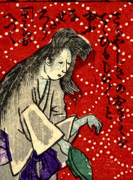

皿屋敷；サラヤシキ，幽霊；ユウレイ，お菊；オキク，女；オンナ

女の幽霊。皿屋敷のお菊である。死装束で髪を振り乱し、皿を手に持っている。詞書には「皿屋敷のお菊が出て、ひもじいひもじいと言う。なぜだろう。皿が減った」とある。
著作者：芳幾近二／出典：親書誌：U426_nichibunken_0229：新作おばけ野噺；シンサクオバケノバナシ／日付：2010／資源識別子：U426_nichibunken_0229_0015_0000
Copyright (c)2010- International Research Center for Japanese Studies, Kyoto, Japan. All rights reserved.